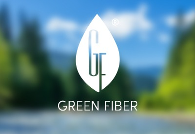

Moda que inspira movimento.
Há mais de sete décadas transformamos fio em tecido, da malharia à tinturaria, do acabamento à estamparia, vestindo as marcas de moda íntima, esportiva e praia de todo o país.
Raízes na Cidade dos Príncipes
Com mais de 70 anos de atuação no mercado, a Malharia Princesa consolidou sua trajetória a partir de suas raízes em Joinville, SC, reconhecida como a Cidade dos Príncipes. Seu nome presta homenagem à Princesa Dona Francisca e traduz uma história construída com tradição, conhecimento e compromisso com a indústria têxtil.
Somos especialistas na produção de tecidos para os segmentos de moda íntima, esportiva e praia, além de oferecermos serviços de beneficiamento têxtil para grandes marcas em todo o território nacional.
Em constante evolução, investimos continuamente no aprimoramento de nossos processos, na incorporação de novas tecnologias e no desenvolvimento de soluções de produção mais eficientes e sustentáveis.

Nossos tecidos
Do primeiro amor de tecer sonhos até a peça final: cada processo carrega uma técnica própria, herdada e aperfeiçoada ao longo de sete décadas.

Circular e por urdume
Criamos artigos lisos, de baixa e alta gramatura, listrados ou com efeitos de desenho. Com os melhores fios do mercado e nanotecnologia, nossas malhas oferecem elasticidade, compressão, conforto térmico, proteção solar e ação anticelulite.

Kettenstuhl e Raschel
Máquinas por urdume entrelaçam os fios de forma que o ponto não se desfaça, conferindo resistência e delicadeza. É assim que nascem rendas, tules e as linhas sem costura e de compressão das nossas coleções.

Rendas e tules
Reconhecidos no mercado nacional, aplicamos o que existe de melhor em fios e matéria-prima. Tecidos delicados exigem cuidado especial, e é nisso que a Princesa se especializou.
Tecnologias e selos
Trabalhamos com fios e acabamentos desenvolvidos para ir além do toque, sustentabilidade, performance e cuidado com a pele em cada fibra.

Amni Soul Eco®
Fio de poliamida 6.6 com aditivos que aceleram sua decomposição, até 10x mais rápido em aterros e 40x mais rápido nos oceanos que uma fibra sintética comum.

Creora® highclo™
Tecnologia que dá ao elastano maior resistência ao cloro, protetores solares e luz UV, com durabilidade até 10x maior que o elastano convencional.

TENCEL™ Modal
Fibra extraída da madeira de faia, de processo autossuficiente em energia. Suavidade excepcional, biodegradável e resistente a repetidos ciclos de lavagem.

Kelp™
Fio inteligente com micropartículas de cristais bioativos: ajuda a reduzir sinais de celulite, melhora performance esportiva, firmeza da pele e circulação.

Aloe Vera
Nanopolímero com extrato de aloe vera aplicado por impregnação. Ação regeneradora, hidratante e anti-inflamatória, disponível em qualquer artigo da coleção.

Green Fiber™
Fio produzido em ciclo fechado, sem emissão de poluentes sólidos, líquidos e gasosos. Tecidos homologados com este tipo de fio passam por uma redução de cerca de 70% do consumo de água e energia durante a produção dos tecidos. Dessa forma, contribuem com a preservação do meio ambiente.
Nossos serviços
Beneficiamento têxtil completo, para as coleções Princesa e para marcas que confiam seus tecidos ao nosso processo.

Cor com precisão
Um dos nossos maiores orgulhos, reconhecido no mercado por processos inteligentes e produtos químicos tecnológicos. Tingimos poliamida, poliéster, modal, algodão e viscose, sempre buscando minimizar o impacto ambiental.

Tramas que traduzem sonhos
Florais, listras e padrões que criam valor agregado. Trabalhamos com pigmentos que brilham no escuro, refletem luz, se revelam na água ou criam relevo com a temperatura (efeito puff).

O toque final
Lisura, maciez ou volume, e acabamentos especiais sob consulta, como antibacteriano, hidrofílico e repelente à água. É aqui que construímos o caimento que diferencia a Princesa.
 Um cuidado com o futuro
Um cuidado com o futuro
Sustentabilidade
Acreditamos que produzir moda e cuidar do planeta caminham juntos, em cada etapa do nosso processo industrial.

Desde 2021
Aderimos ao Programa Perfil Energia + Limpa, passando a utilizar energia elétrica de fontes renováveis através do Mercado Livre de Energia.
Redução de GEE
O Programa Perfil Sustentável certifica anualmente os gases de efeito estufa que deixamos de emitir com a adesão à energia renovável.
Tratamento de efluentes
Investimos continuamente no tratamento de efluentes, tornando nosso processo industrial cada vez mais inteligente e sustentável para as próximas gerações.
Parceria em primeiro lugar
A relação com nossos clientes é um dos nossos maiores diferenciais.

Fui muito bem atendida desde o primeiro contato pelo departamento comercial, tão prestativo que mudei meu plano de compra pela atenção e pelas condições de negociação. Os tules e as rendas são lindos, qualidade nota dez.
Uma empresa que realmente busca a satisfação do cliente do início ao fim do processo.
Vamos tecer algo juntos
Endereço
Av. Santos Dumont, 7555 — Zona Industrial Norte
Joinville — SC, 89219-731
Contato
(47) 4009-0700
comercial@malhariaprincesa.com.br